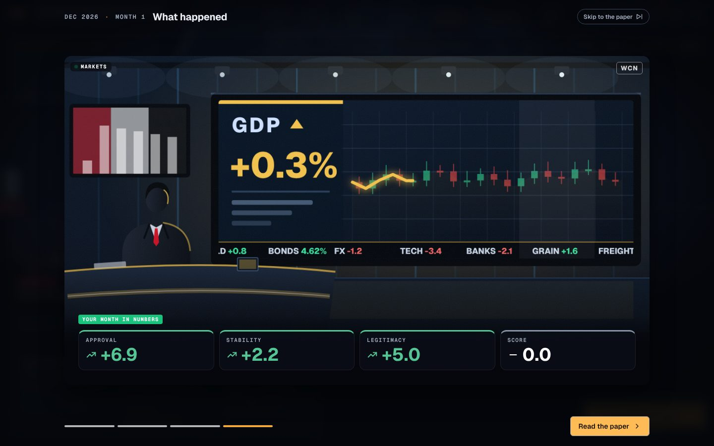
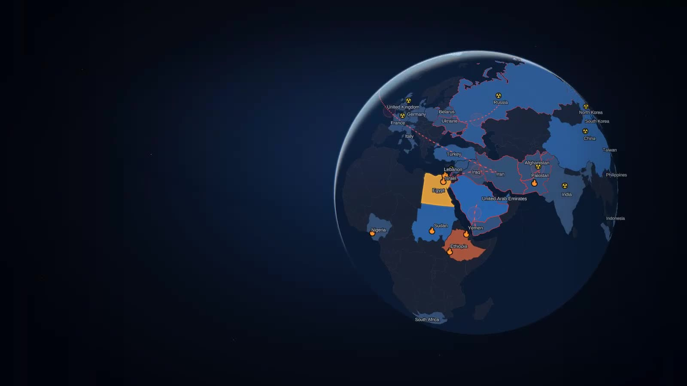
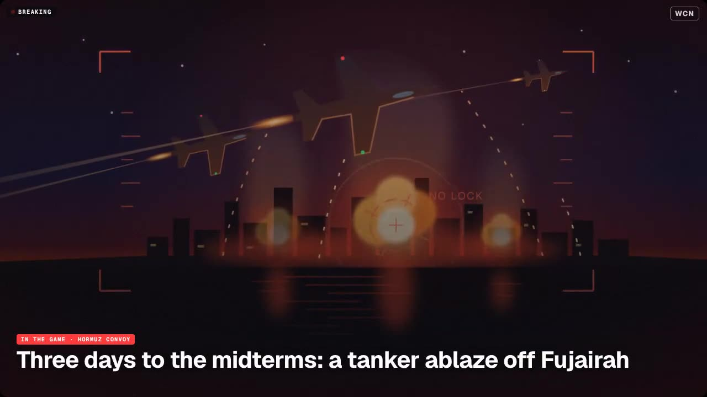
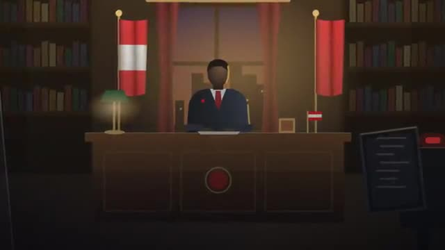
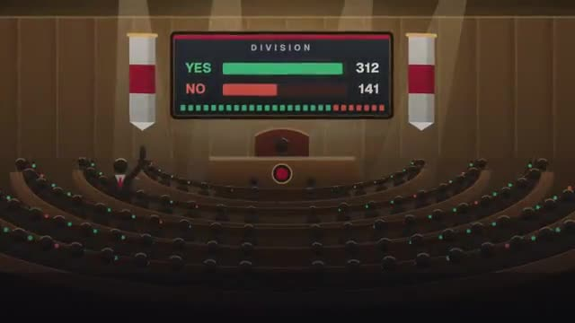
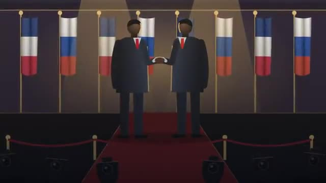
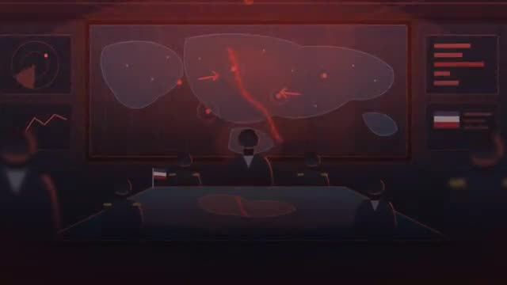

Press kit
World Conflict
World Conflict is a 15-minute geopolitical strategy game set in November 2026, where every nation acts on its own history and half-wrong intelligence.
About the game
World Conflict puts you in charge of one of 41 nations in the world as it stood in November 2026: the US–Iran war over Hormuz, the stalled front in Ukraine, a Taiwan Strait quarantine, the Red Sea, Kashmir and more. Each turn is one month. A crisis lands on your desk, your ministers disagree, and you decide; then every other government answers, each driven by its own history, red lines and imperfect intelligence about you. Flashpoints last about 15 minutes, a full term an evening. Every Flashpoint opens on events that really happened and ends with a debrief of what really happened, so players can tell the record from the alternate history they wrote.
Key facts
- Status
- In development; not yet publicly playable
- Genre
- Turn-based geopolitical strategy, single player
- Platform
- Web browser (desktop and mobile)
- Setting
- November 2026, 41 nations, 8 real flashpoints
- Modes
- Flashpoint (12 months, about 15 minutes), One Term (48 months), Legacy (120 months)
- AI
- Deterministic algorithmic leaders by default; optional LLM tiers (Claude, OpenAI, Gemini or a local model) with cost shown up front
- Price
- To be announced
On real events and hard options
Real-event cards on the site and in the game carry only dated, factual one-liners from public reporting up to October 2026; everything after that is fiction, and in-game words and decisions of real leaders are invented. The game contains war, coups, covert operations and nuclear weapons because the world it models does. They are presented as decisions with heavy, lasting consequences, not as rewards: covert action rarely works and is remembered, and a nuclear strike brings a global embargo and can end the session for everyone. The marketing uses no photographs of real people, no casualty figures and no broadcaster footage; the broadcast scenes are the game's own illustrations.
Screenshots
Real game screens and scenes. Click to download.
 The desk: a crisis card over the 3D globe
The desk: a crisis card over the 3D globe


The outcome reel: the month in numbers The World Chronicle
The World Chronicle


The globe with active wars

Scene: airstrike (Hormuz Convoy)

Scene: address to the nation

Scene: the vote in parliament

Scene: photo op with a leader

Scene: the Situation RoomLogo
World Conflict
Contact
Press contact: to be announced.